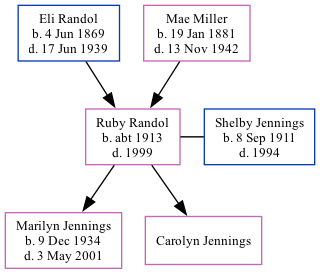

Ruby Helen Jennings (née Randol) c1913 - 1999
[ Home ] | [ Surnames Index ] | [ Family History ]The child of Eli Randol and Mae Miller, was born in Missouri c. 19131,2 and had 2 children with Shelby Ford Jennings: Marilyn S and Carolyn B.
During her life, she was living in Randol, Cape Girardeau, Missouri in 19201; in St Louis, Missouri in 19352; in Cape Girardeau, Missouri, USA in 19373; in McAllen, Hidalgo, Texas, USA on Apr 1, 19402; and in Cheyenne, Wyoming, USA in 19504.
She died in 1999.
Parents
- Eli Green was born on Jun 4, 1869
- Mae Effie was born on Jan 19, 1881
Children
- Marilyn S was born on Dec 9, 1934
- Carolyn B
Citations
- 1920 United States Federal Census Ancestry.com Operations Inc (Age: 7; Marital Status: Single; Relation to Head of House: Daughter)
- 1940 United States Federal Census Ancestry.com Operations, Inc. (Age: 27; Marital Status: Married; Relation to Head of House: Wife)
- U.S. City Directories, 1821-1989 (Beta) Ancestry.com Operations, Inc.
- U.S. City Directories, 1821-1989 (Beta) Ancestry.com Operations, Inc.
Family Tree
Data (GEDCOM) maintained by Jay Weston Hannah, Omaha, Nebraska, USA.
Website generated by ged2site. Last updated on Jun 18, 2024.